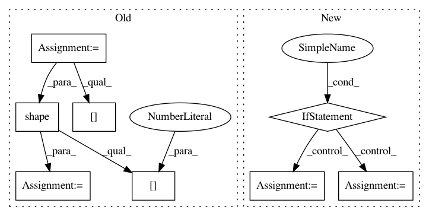

c7320c3b31fb300e6bab95b5a2e29212f332f2db,hypergan/samplers/batch_walk_sampler.py,BatchWalkSampler,sample,#BatchWalkSampler#Any#Any#,56
Before Change
sample = self._sample()
data = sample["generator"]
for i in range(np.shape(data)[0]):
sample_data = data[i:i+1]
self.plot(sample_data, path, save_samples)
time.sleep(0.018)
return []
def plot(self, image, filename, save_sample):
Plot an image.
After Change
inputs_t = gan.inputs.x
self.step+=1
if(self.step >= len(self.steps)):
self.steps = self.regenerate_steps()
self.step=0
z = self.steps[self.step]
with gan.session.as_default():
In pattern: SUPERPATTERN
Frequency: 3
Non-data size: 8
Instances
Project Name: HyperGAN/HyperGAN
Commit Name: c7320c3b31fb300e6bab95b5a2e29212f332f2db
Time: 2018-08-20
Author: mikkel@255bits.com
File Name: hypergan/samplers/batch_walk_sampler.py
Class Name: BatchWalkSampler
Method Name: sample
Project Name: GPflow/GPflow
Commit Name: bd1e9c04b48dd5ccca9619d5eaa2595a358bdb08
Time: 2020-01-31
Author: st--@users.noreply.github.com
File Name: gpflow/kernels/statics.py
Class Name: White
Method Name: K
Project Name: GPflow/GPflow
Commit Name: bb099e4c5b48329b842dbf9884f086f7b514bc0a
Time: 2020-03-16
Author: dutordoirv@gmail.com
File Name: gpflow/models/model.py
Class Name: GPModel
Method Name: predict_f_samples